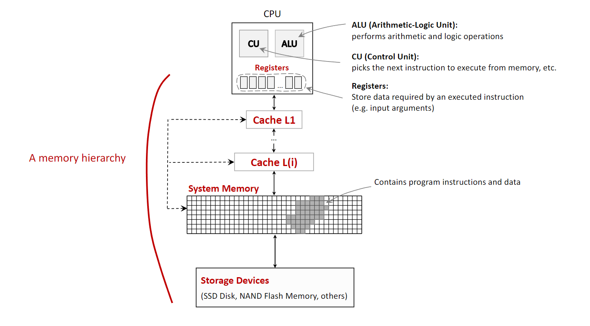
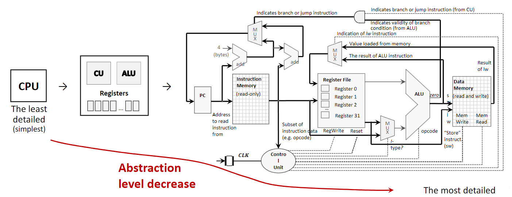
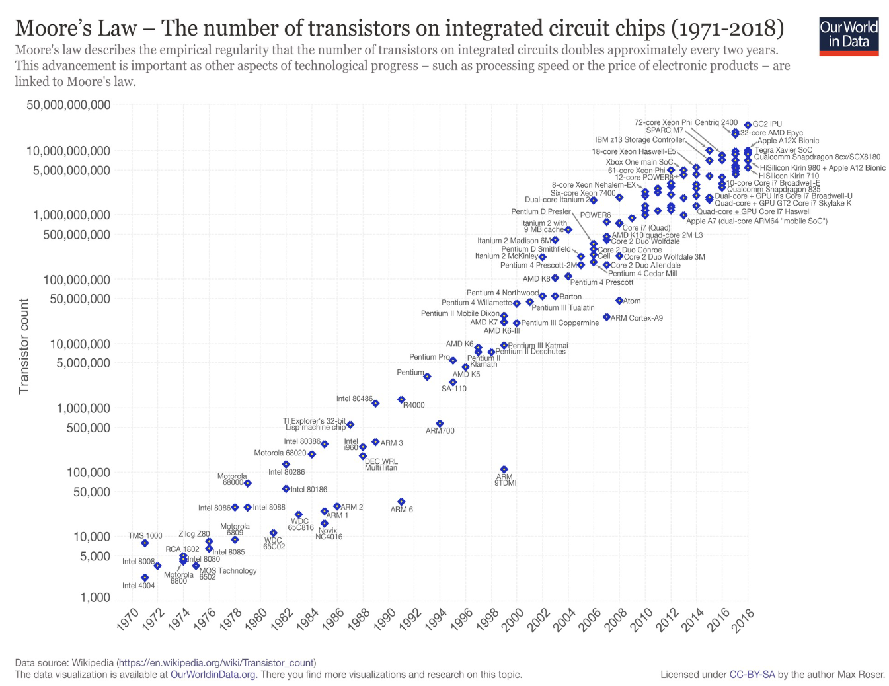
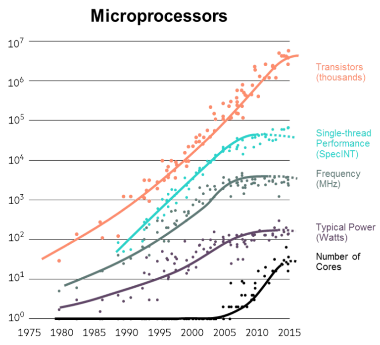
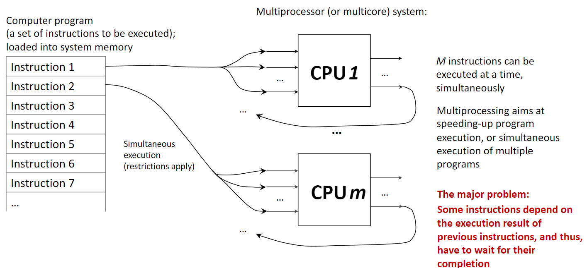
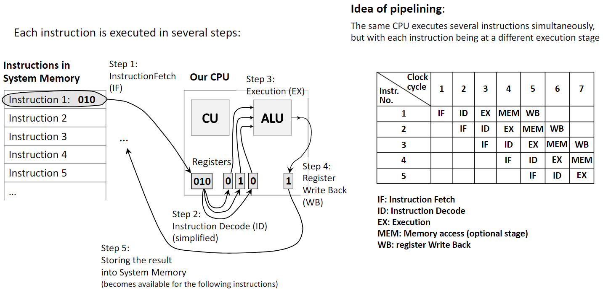
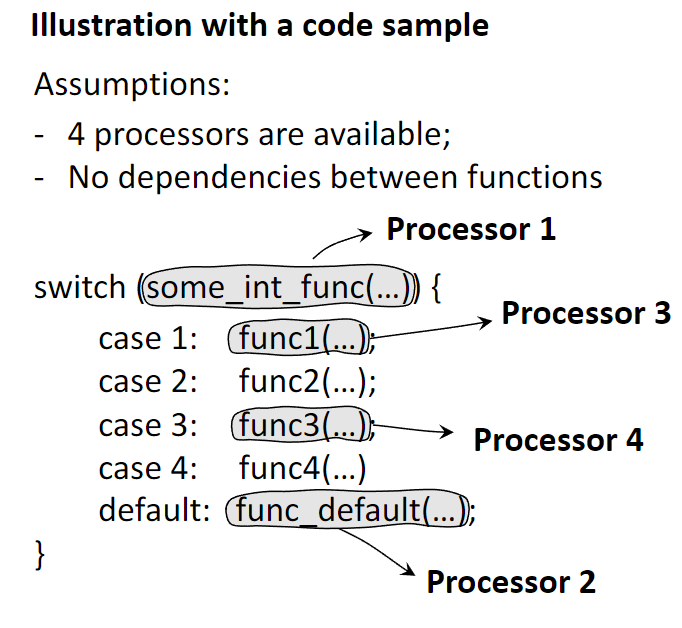
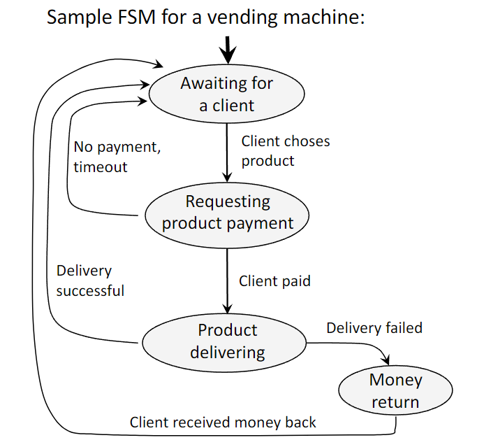
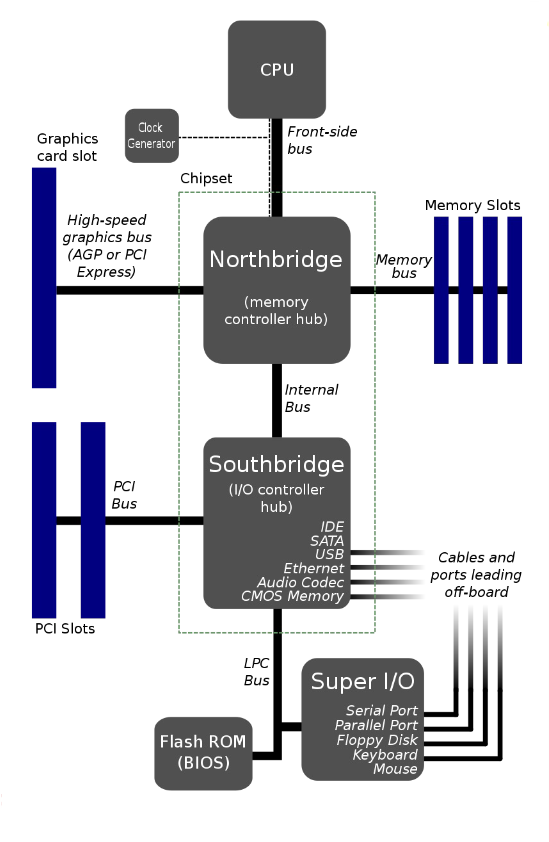

In computer architecture, the memory hierarchy is a fundamental concept that organizes a computer’s storage into a pyramid-like structure. This organization is necessary to balance three competing factors: speed, capacity, and cost. Processors are extremely fast, but high-speed memory is expensive and thus has a small capacity. Conversely, large-capacity storage is affordable but much slower. The memory hierarchy solves this problem by creating layers of memory, where each level is smaller, faster, and more expensive per byte than the level below it. The closer a memory level is to the CPU, the faster the CPU can access it.
The typical levels of the memory hierarchy, from fastest to slowest, are:
CPU Registers: These are the fastest and smallest memory units, located directly inside the CPU. They hold the data that the CPU is actively manipulating at any given moment, such as the results of arithmetic operations. Access is virtually instantaneous, occurring within a single CPU clock cycle.
Cache Memory: This is a small, very fast memory that sits between the CPU and the main system memory. It stores frequently accessed data and instructions, allowing the CPU to retrieve them much faster than from the main memory. This process of storing data in a cache is known as caching. Caches are typically divided into levels (L1, L2, L3), with L1 being the smallest and fastest.
System Memory (RAM - Random Access Memory): This is the computer’s main working memory, where the operating system, applications, and data in current use are kept so that they can be quickly reached by the computer’s processor. It is significantly larger than cache but also slower.
Storage Devices (Secondary Storage): This includes devices like Solid-State Drives (SSDs) and Flash Memory. They provide long-term, high-capacity storage for data and programs. This is the slowest but largest level of the hierarchy and is used to store data persistently.

An important distinction within the hierarchy is between volatile and non-volatile memory.
Volatile Memory (Registers, Cache, RAM) requires power to maintain the stored information. It loses all its data when the power is turned off.
Non-Volatile Memory (SSDs, HDDs, Flash Memory) retains its stored information even when not powered.
1.2 Design Simplification via Abstraction
Abstraction is a core principle in computer architecture used to manage complexity. It involves hiding the complex details of a system while exposing only the essential features. This allows designers and programmers to work with a simplified model of a component without needing to understand its intricate internal workings.
For example, a CPU can be viewed at several levels of abstraction:
Highest Level (Simplest): A programmer views the CPU as a single, opaque block that executes instructions. They interact with it through a defined instruction set without needing to know how the instructions are physically carried out.
Intermediate Level: An architect sees the CPU as a collection of major functional components, such as the Control Unit (CU), Arithmetic Logic Unit (ALU), and registers. This level describes what the components do and how they connect.
Lowest Level (Most Detailed): An engineer sees the CPU as a detailed diagram of logic gates, transistors, and wires that implement its functions. This level describes how the components are built.
By using abstraction, a complex system like a computer can be designed, built, and programmed in manageable layers.

1.3 Moore’s Law and Its Stagnation
Moore’s Law is an observation made by Intel co-founder Gordon Moore in 1965. It states that the number of transistors on an integrated circuit (IC) doubles approximately every two years. For decades, this trend also meant that CPU execution speed doubled every 18-24 months, leading to exponential growth in computing power.
However, since around 2008, the growth in single-thread performance and CPU clock speed has significantly slowed down, leading to what is often called the stagnation of Moore’s Law. This is not because transistor density has stopped increasing, but because of two fundamental physical limits:
Heat Dissipation: As transistors become smaller and more densely packed, the heat they generate becomes a major problem. Increasing clock speed further leads to higher power consumption and excessive heat, which can damage the chip and requires complex cooling solutions. This is known as the power wall.
Speed of Light Limitation: Signals within a CPU chip travel at nearly the speed of light. As chips get faster and more complex, the time it takes for a signal to travel across the chip becomes a significant limiting factor in how quickly the chip can operate.
Because of these limitations, the industry has shifted its focus from making single processors faster to adding more processors (or cores) to a single chip. This has led to the rise of multicore and multiprocessor systems, where performance is increased through parallelism rather than raw clock speed.


1.4 Performance via Parallelism
Parallelism, or parallel processing, involves using multiple processing units to execute multiple tasks or parts of a single task simultaneously. This contrasts with a uniprocessor system, which executes instructions sequentially (one after another). A computer with multiple CPUs or a single CPU with multiple cores is a parallel system.
The goal of multiprocessing is to speed up computation by dividing work among multiple cores. This is highly effective for tasks that can be broken down into independent sub-tasks. However, a major challenge is instruction dependency, where one instruction needs the result of a previous one before it can execute. Such dependencies force a sequential execution and limit the benefits of parallelism, a concept formalized by Amdahl’s Law.

1.5 Performance via Pipelining
Pipelining is another technique to improve performance, but it works differently from parallelism. Instead of using multiple processors, pipelining uses a single processor and breaks down the execution of an instruction into several stages. It then overlaps these stages for different instructions, much like an assembly line. This increases the instruction throughput (the number of instructions completed per unit of time).
A classic five-stage pipeline includes:
Instruction Fetch (IF): Fetch the next instruction from memory.
Instruction Decode (ID): Decode the instruction to determine the required action.
Execute (EX): Perform the calculation using the ALU.
Memory Access (MEM): Read from or write to system memory if required.
Write Back (WB): Write the result back to a CPU register.
While one instruction is in the Execute stage, the next one is being decoded, and the one after that is being fetched. Pipelining improves performance by increasing instruction throughput on a single processor, while parallelism improves performance by running multiple instructions truly simultaneously on different hardware units.

1.6 Performance via Speculation (Prediction)
Speculative execution is an optimization technique where a processor makes an educated guess about the future execution path of a program and begins executing instructions from that predicted path before it’s certain the path will be taken. This is most commonly used for branch prediction.
When the CPU encounters a conditional branch (e.g., an if statement), instead of waiting to see which branch is taken (which would stall the pipeline), the branch predictor guesses the outcome. The CPU then speculatively executes instructions along the predicted path.
If the prediction was correct, the results are kept, and time was saved by avoiding a pipeline stall.
If the prediction was incorrect, the speculative results are discarded, and the CPU starts executing from the correct path. This incurs a performance penalty, but since modern predictors are highly accurate (often >95%), the overall performance gain is significant.

1.7 Other Fundamental Ideas
Dependability via Redundancy: This principle involves adding spare components (e.g., extra CPUs, memory units, or power supplies) to a system to increase its reliability. If a primary component fails, a redundant one can take over, ensuring the system continues to operate without interruption. This is critical in applications like spacecraft, servers, and other mission-critical systems.
Make the Common Case Fast: This is a design philosophy that prioritizes optimizing the performance of the most frequent operations or use cases. By focusing engineering resources on making common tasks as fast as possible, the overall system performance is improved, even if less common tasks are not as highly optimized.
Finite State Machines (FSM): An FSM is a mathematical model of computation used to design both hardware and software systems. It consists of a finite number of states and the transitions between them, which are triggered by inputs. FSMs are a powerful and convenient tool for modeling the behavior of systems like network protocols, compilers, and hardware components like processor caches.

1.8 Noorthbridge / Southbridge Hardware Layout
In traditional motherboard architecture, the chipset is divided into two main components: the Northbridge and the Southbridge. This design acts as a hub to manage data flow between the CPU and the various other parts of the computer.
The Northbridge, also known as the memory controller hub, is the faster of the two chips and is directly connected to the CPU via the Front-Side Bus (FSB). Its primary role is to handle communication with the most performance-critical components:
System Memory (RAM): It controls the flow of data to and from the main memory.
High-speed graphics card slot: It manages the connection to the AGP or PCI Express slot, providing a direct, high-bandwidth path for the graphics card.
The Southbridge, or I/O controller hub, is connected to the Northbridge (not directly to the CPU) and is responsible for managing the slower peripheral devices and input/output (I/O) functions. These include:
PCI Slots for expansion cards.
SATA and IDE ports for storage drives.
USB ports for external devices.
Onboard audio and Ethernet.
The Flash ROM (BIOS), which is accessed via the LPC Bus.
Legacy ports (Serial, Parallel, Keyboard, Mouse) managed by the Super I/O chip.
This separation allowed high-speed traffic between the CPU, RAM, and graphics card to be handled by the Northbridge without being slowed down by the numerous, slower peripheral devices managed by the Southbridge. It is important to note that this architecture is now considered legacy. In modern systems, the functions of the Northbridge (especially the memory controller) have been integrated directly into the CPU, and the Southbridge’s role has been consolidated into a single chip known as the Platform Controller Hub (PCH), resulting in a more efficient design.

2. Definitions
Computer Architecture: The design and fundamental operational structure of a computer system. It defines the system’s parts and their interrelationships, including the instruction set, microarchitecture, and overall system design.
CPU (Central Processing Unit): The primary component of a computer that executes instructions. It contains the Control Unit and the Arithmetic Logic Unit.
ALU (Arithmetic Logic Unit): The part of the CPU that performs arithmetic (e.g., addition, subtraction) and logic (e.g., AND, OR, NOT) operations.
Control Unit (CU): The part of the CPU that directs the operation of the processor. It fetches instructions, decodes them, and tells the other parts of the computer system how to carry them out.
Register: A small, extremely fast memory location located directly inside the CPU used to hold a single piece of data (like a number or an instruction) during processing.
Cache Memory: A small amount of very fast, volatile memory that stores frequently accessed data from the main memory, reducing the average time to access data by avoiding slower RAM access.
System Memory (RAM): The main volatile hardware memory in a computing device where the operating system, application programs, and data in current use are kept for quick access by the processor.
Volatile Memory: Memory that requires constant power to maintain stored information; its contents are lost when power is turned off.
Non-Volatile Memory: Memory that can retain stored information even after power is removed.
Abstraction: The technique of hiding complex implementation details and showing only the necessary features of an object or system to simplify its use and design.
Moore’s Law: The observation that the number of transistors in an integrated circuit doubles about every two years, which historically led to exponential growth in computing power.
Parallelism: The simultaneous execution of multiple instructions or tasks on multiple processing units (cores) to achieve faster computation.
Pipelining: A technique where a single processor overlaps the execution of multiple instructions by breaking each into stages and processing them in an assembly-line fashion to increase instruction throughput.
Speculative Execution: An optimization technique where a processor performs a task before it is known whether the task is actually needed, most often used for branch prediction.
Redundancy: The inclusion of extra components in a system that are not strictly necessary for its basic functioning, intended to increase reliability in case of component failure.
Finite State Machine (FSM): A computational model consisting of a finite number of states and transitions between them in response to inputs, used to model the behavior of dynamic systems.